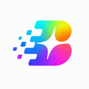
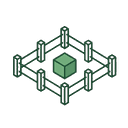
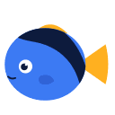
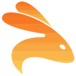
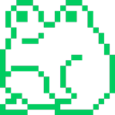

Best AI agents for running code safely (2026)
Sandboxes that let agents run code and tools in isolation, away from your machine and data. We list 89 tools for running code safely below, each with a link-checked page, pricing as the maker states it and alternatives.
Updated
89 tools: 67 open source, 1 source-available, 11 free or freemium, 8 paid, usage-based or enterprise, 2 pricing on the maker's site.
Switch
Connect any AI agent to your team in Slack, Teams & Discord. Open-source and self-hostable
Added

Dormice
The SQLite of agent sandboxes — self-hosted, E2B-compatible. One machine, sandboxes that live forever, idle costs nothing
Added
Okou
Okou connects to the tools your team already uses and does the work — across marketing, sales, engineering, and operations, under your control
Added
Airecon
AIRecon is an autonomous cybersecurity agent that combines a self-hosted Large Language Model (Ollama) with a Kali Linux Docker sandbox and a Textual TUI. It is designed to automate security.
Added

Fence
Lightweight, container-free sandbox for running commands with network and filesystem restrictions
Added
Sandboxd
Open-source, self-hosted AI app builder — an agent builds real apps in isolated sandboxes on your own server, each live at a preview URL. Self-host in one command.
Added
PGX
Lightweight Postgres-compatible database written in Rust that gives every coding agent its own disposable Postgres: one runtime hosts thousands of isolated databases, installs as a Claude Code plugin or Agent Skill.
Added
Code Mode
Plug-and-play library to enable agents to call MCP and UTCP tools via code execution
Added
Nekro Agent
NekroAgent ， Claude Code 、 、 、 MCP ， 、 、 。 QQ、Discord、Telegram、Minecraft、BilibiliLive、WeChat、Email、SSE(SDK) ， ， 、 、 Agent
Added
OpenRath
An open-source, PyTorch-like runtime for dynamic multi-agent and multi-session workflows
Added
BrowserKitten
Paw Work - selection-first web agent for Chrome: select on the live page, describe the outcome, take away an editable office file. BYOK, sandboxed, no server
Added
XRP Community Wallet
Fully decentralized and the most secure XRP & EVM wallet - built by the community, for the community
Added

Dory
Dory is the complete local development system for Apple Silicon: Docker, Compose, Kubernetes, virtual machines, and policy-bound agent sandboxes
Added
Arkon
Arkon: Enterprise AI Knowledge Hub & MCP Server. Self-hosted knowledge base for teams to manage RAG contexts, access policies, and AI skills.
Added
Phantom
An AI co-worker with its own computer. Self-evolving, persistent memory, MCP server, secure credential collection, email identity.
Added
Mysql MCP Server
A Model Context Protocol (MCP) server that enables secure interaction with MySQL databases
Added
MCP Gateway Registry
Enterprise-ready MCP Gateway & Registry that centralizes AI development tools with secure OAuth authentication, dynamic tool discovery, and unified access for both autonomous AI agents and AI coding.
Added
Appsandbox
Easily create full virtual machines that are sandboxed for development or computer use models
Added
Sandlock
The lightest AI sandbox. A process-based sandbox for Linux, no container, no VM, no privilege, no prompt injection
Added
Chamelio
Chamelio reviews and negotiates contracts for in-house legal teams. It reviews contracts, policies, or compliance work and cites the source.
Added

Keploy
Keploy records API traffic and turns it into isolated integration and end-to-end tests
Added
Redamon
Open-source, self-hosted AI penetration testing framework: maps your attack surface into a graph, autonomously exploits it from a Kali sandbox with human approval gates, and opens PRs that fix what.
Added

Strands Box
Open source sandbox from the Strands Agents team that pairs OS-level isolation with default-deny Dogwood policies over shell, Python, egress, and MCP calls.
Added
Fly.io MCP
The Fly.io MCP server is one endpoint that connects your coding agent to Sprites, Fly.io's sandboxes for agents, and to your Fly.io apps. The agent can build and test freely in a Sprite, then move the result to a Fly Machine in production whenever you are ready, with the rest of Fly's cloud available along the way.
Added
Raydo Agent OS
The AI agent operating system for real work. Raydo gives autonomous agents a dedicated desktop workspace where they can browse the web, read and edit local files, run multi-step workflows across apps, and hand off tasks for human review. Built for founders, operators, and engineering teams that want background agents executing repeatable workflows with full step logs, sandboxing, and approval checkpoints.
Added
Zozo HQ
Zozo HQ is a coding-agent harness that turns dependency-ready issues from GitHub or matched Jira Cloud and Bitbucket Cloud into reviewable pull requests using isolated git worktrees, Claude Code, Codex or OpenCode via OpenRouter, and structured human clarification before anything merges.
Added
NVIDIA OpenShell
Sandboxed runtime for autonomous agents with declarative YAML policies on file, network and credential access.
Added
OpenSandbox
Secure, fast sandbox runtime for AI agents to run code.
Added
E2B
Secure cloud sandboxes for running agent-generated code.
Added
CubeSandbox
Lightweight, concurrent sandbox for running AI agent code securely.
Added
microsandbox
Local-first microVM runtime for running untrusted agent code safely.
Added
smolvm
Portable, branchable virtual machine for running agents safely on your computer.
Added
agentOS
A lightweight operating system for agents from Rivet that runs coding agents and their tools inside fast WebAssembly sandboxes with a file system, processes and networking, so you can spin up thousands cheaply.
Added
nono
Zero-trust sandboxing for agent runtimes.
Added
Judge0
Sandboxed code execution system for running untrusted code from people and AI.
Added
Agent Sandbox (Kubernetes)
A Kubernetes project that adds a Sandbox resource for running isolated, stateful agent workloads such as code execution and browsers, with warm pools and fast startup on your own cluster.
Added
ArcBox
Runs AI agents on isolated machines with their own kernel, filesystem and network.
Added
forkd
MicroVM sandbox runtime for AI agent fan-out that forks KVM-isolated child VMs from a warm snapshot in milliseconds.
Added
BoxLite
Embeddable micro-VM for running AI agents.
Added
Zeroboot
VM sandboxes for running agent code that start in under a millisecond by forking a warm snapshot with copy-on-write memory.
Added
Agent Safehouse
macOS sandbox for local coding agents that limits file and integration access with deny-first policy profiles.
Added
Perplexity SPACE
Perplexity's open-source sandbox platform that runs each agent task in its own Firecracker microVM, with credentials and network access controlled from outside.
Added
Cloudflare Sandbox SDK
SDK for running isolated code sandboxes on Cloudflare's network, so agents can execute commands and files safely from a Worker.
Added
AgentBay
Alibaba Cloud's cloud sandbox service for agents, offering ready-made browser, Linux and Windows desktop, mobile and code environments that agents control through an SDK or MCP.
Added
Tensorlake
Serverless runtime that gives agents MicroVM sandboxes and durable orchestration for long-running background jobs.
Added
Modal
Serverless compute and sandboxes for AI workloads.
Added
AIO Sandbox
All-in-one Docker sandbox for AI agents that combines a browser, shell, files, MCP, VS Code Server and Jupyter in one container.
Added
Context Mode
Context window optimizer for coding agents that sandboxes tool output and persists session memory.
Added
Cua
Open-source infrastructure for computer-use agents: sandboxes, drivers across operating systems and benchmarks.
Added
Open SWE
LangChain's asynchronous coding agent that takes work from GitHub issues, Slack or Linear, implements it in an isolated sandbox and opens a pull request.
Added
Steel
Open-source browser API and sandbox for AI agents to control web browsers at scale.
Added
Agent Governance Toolkit
Microsoft toolkit for policy enforcement, identity and sandboxing for AI agents.
Added
Fragments
E2B's open-source Next.js template for AI-generated apps, like Claude Artifacts or v0, with generated code run in secure E2B sandboxes.
Added
Rakazo
Self-hosted personal AI agent and persistent teammate for web, desktop, iPhone and Android, with your own choice of model and computer sandbox.
Added
HolmesGPT
CNCF sandbox SRE agent that investigates alerts and incidents.
Added
OneCLI
Sandboxed agent harness for teams with secure credential handling.
Added
Omnara
Open-source managed agent platform, a self-hostable alternative to Claude Managed Agents and the OpenAI Agents API, with tools, secrets and sandboxes.
Added
Moltis
Secure personal agent server in Rust with sandboxed execution.
Added
LayerFS
LayerFS is a filesystem built for running many coding agents in parallel. Each agent mounts a complete, writable workspace on top of shared committed history, does its work, commits what it changed and goes away, so compute only exists while a command runs. Every tool call becomes a commit on a branch, same-file clashes between agents are refused rather than silently merged, each line records the step that wrote it, and any commit can be forked at no cost for recursive exploration or RL training. Agents on different computers share one serverless store with chunk-level deduplication.
Added
Open Cowork
Open-source desktop app for Windows and macOS that installs Claude Code, MCP tools and skills in one click with sandbox isolation.
Added
ADR
Uber's Agentic AI Detection and Response system that secures employee and customer-facing AI agents with observability and threat detection.
Added
AgentDock (NexusDock)
A secure MCP runtime that lets ChatGPT, Claude and other AI clients operate your Mac, Windows, Linux and Android devices, with memory, tools and reusable automations.
Added
Cloudroom
Cloudroom runs Claude Code, Codex, Pi and other coding agents in the cloud, each in its own isolated sandbox on its own Git branch, using your own model logins; the Rust core is open source to self-host, and a desktop app manages local and cloud agents.
Added
Rogue
Agent evaluator and red-team tool that probes your agent with test conversations and attacks and reports pass or fail against your policies.
Added
OpenComputer
OpenComputer is a platform for building and deploying long-running AI agents as code. You define an agent as a TypeScript function with its model, tools and MCP servers, deploy it with one command, and every session gets its own real cloud computer, with managed sessions, schedules and API keys kept outside the agent's runtime. Templates include a coding agent that edits a repo, runs checks and opens a draft pull request, and market-research and GTM agents; its own Slack coding agent runs on it. Pricing is pay-as-you-go for model calls and per-second machine time.
Added
Halofy
Halofy is an access and governance layer for a team's AI agents, giving every agent organizational context through one identity and policy model with provenance and audit, alongside a desktop AI workstation that turns power users' agent practices into shared policies.
Added
Lyzr
Enterprise agent studio and framework for building secure AI agents.
Added
Speakeasy Gram
Gram is Speakeasy's open-source platform for building, hosting and governing MCP servers. Teams can turn APIs into curated MCP toolsets, host them, and manage which agents and people may use which servers from one control plane, with sign-in, access policies and usage visibility; its own MCP server lets an agent manage that setup directly.
Added
OpenZeppelin MCP
OpenZeppelin's official MCP servers that let agents generate secure smart contracts from audited OpenZeppelin libraries for Solidity, Cairo, Stellar and more.
Added
Automox MCP
Official Automox MCP server for managing devices, patches and policies in natural language.
Added
CData Connect AI MCP
CData's cloud-hosted MCP server for secure AI access to hundreds of enterprise data sources through Connect AI.
Added
CoreWeave Forge
One product to run, observe, evaluate and post-train agents (W&B, OpenPipe, sandboxes).
Added
Egnyte MCP
Egnyte's remote MCP server for secure AI search, upload and file management in your Egnyte account.
Added
HaveTML
HaveTML lets AI agents publish what they make as a permanent share link. Ask Claude, Cursor or any MCP client to publish HTML, Markdown, JSON or YAML, and you get a sandboxed link anyone can open without logging in. Each link keeps its version history, supports comments, and can be set to private, unlisted or public.
Added
Hyperbrowser
Cloud browsers and isolated sandboxes for AI agents that you start in one call and drive with Playwright, Puppeteer or any agent.
Added
Pimlico AI
CLI and MCP server that lets coding agents manage a Pimlico smart-account infrastructure account, from balances and logs to sponsorship policies.
Added
StackAI
Drag-and-drop no-code platform for enterprises to build and deploy secure, compliant AI agents.
Added
Deer Flow
ByteDance's open-source long-horizon agent harness that researches, codes and creates using sandboxes, memory and sub-agents.
Added
ego lite
Free macOS browser where Claude Code or Codex run automation tasks in their own isolated Spaces next to your tabs, reusing your logged-in sessions through an agent skill.
Added
ThinkRail
JetBrains' lightweight agentic IDE that pairs you with the pi coding agent, with isolated git-worktree workspaces, editor tabs, terminals and diffs.
Added
Mantis
Google's toolkit for AI coding agents to autonomously find, reproduce and patch software vulnerabilities in isolated environments.
Added
ToolHive
Stacklok platform that runs MCP servers in isolated containers with per-request identity, access policy and observability.
Added
Lody
A team workspace for running AI coding agents in parallel in isolated Git worktrees, with live diff review, GitHub integration and access from phone or desktop.
Added
Sage
Sage is an open-source (MIT) RSI agent harness, where RSI stands for Recursive Self-Improvement: it improves agents using feedback from their tasks. Starting from a goal or a curated usage history, it runs the agent, has a separate evaluator grade the results, tunes the agent and keeps every version with its evidence, so you decide which one to adopt. It comes as a Desktop app, a multi-user Server with Agent Studio, and the SAgents Python runtime, with support for Skills, MCP, multi-agent setups and sandboxed runs with approvals.
Added
Pydantic Deep Agents
Self-hosted terminal AI assistant and Python framework on Pydantic AI, with tool calling, sandboxed execution, multi-agent teams and checkpoints.
Added
AgentEnv Framework
AgentEnv Framework is Scale AI's open-source Python SDK and CLI for building RL environments for agents: containerized worlds with realistic apps and data behind an MCP gateway, plus tasks (as DAGs) that grade any agent in any sandbox.
Added
Mirror CLI
Reflection AI's terminal coding agent that reads code, edits files and runs commands in isolated git worktrees, using the open-weight Beam model by default.
Added
Fileaify
Fileaify is a project workspace that plugs into the coding agent you already use, such as Claude Code, Codex, Cursor or Windsurf. You give the agent one URL (fileaify.com/agent) or the hosted MCP connector, approve its access, and it finds the project's documentation, architecture decisions, roadmap and known issues in each new conversation, so you don't have to explain the project again, even when you switch agents. Credentials stay in a vault: the agent can run approved actions with them without ever seeing the keys, sensitive actions need a human's approval, and paid tiers add a sandboxed executor where the agent can actually run work. The agent also writes its contributions back into the project docs, following your review rules. A live demo project lets you try it without installing anything.
Added
Scalebrowser
Gives each agent its own isolated browser with a persistent identity for staying signed in.
Added
GitHub repos (76)
| Repo | GitHub stars | Licence | Last push |
|---|---|---|---|
| 84,715 | MIT | 2026-10-30 | |
| 32,905 | Elastic License 2.0 (source-available) | 2026-10-30 | |
| 31,341 | MIT | 2026-10-30 | |
| 20,809 | MIT | 2026-10-30 | |
| 20,733 | Apache License 2.0 | 2026-10-30 | |
| Keploy ↗ | 18,913 | — | 2026-10-30 |
| 16,293 | Apache License 2.0 | 2026-10-30 | |
| 14,618 | Apache License 2.0 | 2026-10-28 | |
| 13,107 | Apache-2.0 (third-party components under their own licences) | 2026-10-30 | |
| 11,146 | MIT | 2026-10-30 | |
| 8,871 | Apache License 2.0 | 2026-10-29 | |
| 7,889 | Apache License 2.0 | 2026-10-30 | |
| 6,882 | Apache License 2.0 | 2026-10-30 | |
| 6,495 | MIT | 2026-10-29 | |
| 6,404 | Apache License 2.0 | 2026-10-13 |
Top 15 of 76 by stars. Stars and licence come from each repo, checked when the listing was last verified.
Related tasks
Popular with: DevOps and SRE engineers · Security engineers · MCP developers · Related searches: Sandboxes for AI agents to run code
Tools are matched to tasks by category, use cases and what each tool says it does. Missing one? Submit it free.